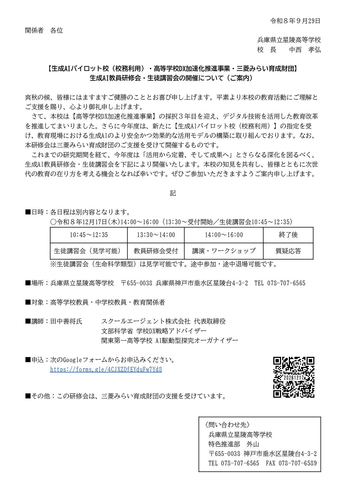

導入研修の目的と安全な生成AIの利用環境
さまざまな実践内容を知識としてお伝えします。30分という限られた時間の中ですべてをお伝えしたり演習したりすることはできないため，研修後もこのポータルサイトを見返してみてください！
※このポータルサイト自体も，Geminiが数分で作成しました。
本校の生成AI活用調査では，回答者の約75％が「ほぼ毎日・週2〜3回」利用しており，業務時間の削減や精神的負担の軽減を実感しています。一方で，「ハルシネーション（AIの誤り）の確認に時間がかかる」「プロンプトの書き方が難しい」「個人情報・セキュリティが不安」という声も多く挙がっています。本日の研修では，この3つの壁を突破する実践の「型」を体験します。
■ Gemini（Google）
- 各学校のGoogleアカウントでGeminiを開くと，画面下に「兵庫県教育委員会事務局教育企画課 のチャットはモデルのトレーニングには使用されません。」と表示されます。入力内容が外部の学習に使われる心配はないため，安心して活用できます。
- ただし，学習に使用されない設定であっても，個人情報（生徒の氏名・成績など）の入力は禁止されています。
- GeminiはAIであり，誤った情報を出力することがあります。最終的な内容確認は必ず人間が行ってください。
■ Copilot（Microsoft）
- 学校や教育機関のMicrosoftアカウントでログインすると，商用データ保護（Enterprise Protection）が適用され，入力データがモデルのトレーニングに使用されるのを防ぎます。
- 学校環境に合わせて使い分けることが可能です。
ワーク１プレチェック（認識確認）：公文書×絵入りチラシの読み取り実験
このワークは生成AIを使用するどんな場面でも使えます。最初に資料を添付して送信したら，生成AIに「いま，どのような認識をしていますか？」「不十分なことがあれば，出力の前に私に質問をしてください」と伝え，認識が一致していることを確認してから，目的の指示を入力します。
画像やPDFを読み込ませるとき，いきなり指示するとそもそものファイルを誤認識して指示通りに回答しないことがあります。今回は「堅いテキスト（12月の生成AI研修会の公文書）」と「絵入りのビジュアル資料（チラシ）」の2枚を同時に読み込ませ，AIが文字情報とチラシの絵をどう言語化・認識するかを最初に確認します。
📂 ワーク用サンプル資料（2枚の画像を保存してAIに添付）
以下の2枚の画像をクリックすると拡大プレビューできます。右クリックで画像を保存（またはGoogleドライブからダウンロード）し，2枚同時にGeminiへ添付してください。

🔍 クリックで拡大プレビュー 🔍 クリックで拡大プレビュー
🔍 クリックで拡大プレビュー
添付した2つの資料（12月研修会の公文書・チラシ）を読み取り，以下の3点を出力してください。 ・公文書とチラシに記載されている基本情報（日時・場所・対象・内容・申込方法など）の正確なテキスト化 ・チラシに描かれている絵（イラスト）やデザインに何が描かれており，どんな印象を与えるかの簡潔な説明 ・2つの資料の間で読み取りにくかった箇所や，認識が不確実な点（あれば） ※この段階では，まだ案内文や資料の作成は行わず，認識の確認のみを行ってください。
ワーク２公文書×チラシを活用した「校務リライト＆探究チラシ添削」
※ワーク1で認識が揃ったら，同じチャットの続きに目的の指示を出します。
ご自身の立場や目的に合わせて，以下の4つの選択肢（①〜④）から選んで実行してください。すべてのプロンプトで「画面確認用プレビュー」「解説・注意点」「コピペ用プレーンテキスト」の3段階出力を行います。
添付した2つの資料（公文書・チラシ）の情報をもとに，校内の教職員へ参加を呼びかける案内文を作成してください。 〈制約・調整条件〉 ・公文書にある正確な日時・対象・申込手順・締切を漏れなく盛り込んでください。 ・チラシのキャッチコピーやイラストが持つ親しみやすさ・見どころを言葉として取り入れ，多忙な先生方が「少し参加してみようかな」と思える前向きなトーンにしてください。 〈出力形式〉以下の3つのステップ順で出力してください。 ・［画面確認用：案内文プレビュー］見出しや箇条書きを活用し，一目で内容が頭に入るよう美しく整形して表示してください。 ・［表現の意図 / 伝達リスクの指摘］チラシの要素をどう文章に活かしたかの解説と，申込漏れを防ぐために強調すべき注意点を出力してください。 ・［Classroom/メール コピペ用プレーンテキスト］マークダウン記号（#や**など）を使わず，Google Classroomや校内メールにそのまま貼り付けできるプレーンテキスト形式で出力してください。
添付した2つの資料（公文書・チラシ）の内容のみに基づいて回答してください。記載がない事項は「記載なし」と明記し，推測で補わないでください。 2つの資料を突き合わせて点検したうえで，校内で参加申込・出張手続きを進めるためのチェックリストを作成してください。 〈制約・調整条件〉 ・日時・会場・対象者・申込締切・持ち物などについて，公文書とチラシの間で食い違いや表記ゆれ・曖昧な点がないかを厳密にチェックしてください。 ・チラシのイラストやレイアウトが，公文書に記載された研修の趣旨と合致しているかについても客観的にレビューしてください。 〈出力形式〉以下の3つのステップ順で出力してください。 ・［画面確認用：点検結果＆手続きチェックリスト］項目別の突合表と，担当者が進めるべき時系列チェックリストを表形式で美しく整形して表示してください。 ・［見落とし注意ポイント / 確認事項解説］問い合わせが来そうな曖昧な点や，事前確認すべきリスク点を箇条書きで解説してください。 ・［Word/Excel コピペ用プレーンテキスト］マークダウン記号（#や**など）を使わず，WordやExcelにそのまま貼り付けできるプレーンテキスト形式で出力してください。
添付した2つの資料（公文書・チラシ）をもとに，この研修に参加する教員が管理職へ提出する「出張申請の理由文」と，受講後に学年・分掌で共有する「伝達報告メモの骨子」を作成してください。 〈制約・調整条件〉 ・出張理由は，公文書の趣旨を踏まえ，自校の教育活動や校務改善にどう還元できるかが伝わる簡潔な公用文調にしてください。 ・伝達メモの骨子は，研修後にメモを書き込むだけでA4・1枚の報告書が完成するテンプレート形式にしてください。 〈出力形式〉以下の3つのステップ順で出力してください。 ・［画面確認用：出張理由文＆伝達メモプレビュー］見出しと項目を整理して美しく表示してください。 ・［管理職・校内共有時のポイント］起案時に添えるべき補足事項や，校内還元時に押さえるべき視点を解説してください。 ・［起案システム/Word コピペ用プレーンテキスト］マークダウン記号（#や**など）を使わず，そのまま貼り付けできるプレーンテキスト形式で出力してください。
この2つの資料を「高校生が作成した探究発表の企画書と宣伝チラシ」に見立てて，生徒向けの改善フィードバックを作成してください。 〈制約・調整条件〉 ・生徒のやる気を引き出すため，まずは良い点（強み）を具体的に褒めてから改善点を伝えてください。 ・「チラシの絵（イラスト）が発表内容と合っているか」「初めて見る人に魅力や要点が伝わるか」「企画書とチラシで情報の抜け漏れがないか」の3つの視点で助言してください。 〈出力形式〉以下の3つのステップ順で出力してください。 ・［画面確認用：生徒向けフィードバックプレビュー］高校生にそのまま見せられる分かりやすい言葉と構成で表示してください。 ・［指導者向け：見取りと声かけのポイント］教員が生徒のポスター・チラシ指導を行う際に注目すべき視点を解説してください。 ・［ワークシート/Classroom コピペ用プレーンテキスト］マークダウン記号（#や**など）を使わず，そのまま貼り付けできるプレーンテキスト形式で出力してください。
💬 ■ 対話タイム
隣の人と成果物を共有し対話してください！（AIがチラシの絵をどう捉えて文章に活かしたか，2つの資料の表記ゆれをどう見つけたかも話題にしてみてください）
ワーク３Gemini Notebook（NotebookLM）による「1ソース・マルチユース」展開
- 〈ハルシネーション（AIの嘘）を防ぐ安全なAI利用のモデルケース〉生成AIを校務や授業で使う際，一番懸念されるのは「誤った情報を出力すること」と「確認に時間がかかること」です。Gemini Notebookは「アップロードした資料（一次ソース）の中身だけに基づいて回答する」という強い制限がかかるため，根拠のある正確な情報整理が可能になります。
- 〈「教員が全パターンの資料を作る必要がなくなる」という本質的な業務改善〉PDF資料を1枚アップロードするだけで，「動画解説」「音声解説（ポッドキャスト）」「スライド資料」「インフォグラフィック」「レポート」「クイズ」「マインドマップ」などが芋づる式に生成できます。
- 〈校務での応用例〉複数大学の入試要項PDFを読み込ませて出願条件や試験日を一覧比較したり，校内規定・会議資料から必要な情報だけを根拠付きで検索したりする用途でも高い効果を発揮します。
「次期学習指導要領等に向けた審議まとめ」のPDFを読み込ませることで，探究のカリキュラム設計・評価規準づくりから生徒向け解説・校内研修資料までが一元生成されます。
📓 新学習指導要領 NotebookLM を開く（新しいタブ）ワーク４生徒の思考を深める「AIコーチ（Gem・チャット共有）」作成
「先生，テーマが決まりません」「次なにしていいか分かりません」と生徒から一斉に呼ばれて，身体が足りないと思ったことはありませんか？探究活動で生徒の思考を深めるために一番必要なのは，「生徒一人ひとりの考えに対する1対1の対話を重ねること（壁打ち）」です。しかし，10人以上の生徒全員と毎時間じっくり話すのは物理的に不可能です。だからこそ，AIに教員の代わりに「問いかけ役」になってもらいます。先生が教卓を離れて本当に手厚いサポートが必要な生徒の隣に座るために，生徒全員の横に「問いかけてくれる副担任（AIコーチ）」を座らせる仕組みを作りましょう！
Gemとは，特定の役割やルールをあらかじめ記憶させ，自分専用のAIアシスタント（カスタムチャットボット）を作成・利用できる機能のことです。
💎 Gemマネージャーを開く（新しいタブ）■ メタ壁打ち（GeminiにGemの指示を作らせる）
- mdファイル（拡張子 .md）とは：「見出しや箇条書きなどの構造をシンプルな記号で書いた，ただのテキストファイル（文字だけのデータ）」のことです。マークダウン（Markdown）と呼ばれる軽量な記述方式で作られており，Windowsの「メモ帳」などの標準的なテキストエディタで作成・編集できます。
- mdファイルを使うメリット：①
#（見出し）や-（箇条書き）を使うことで章立てや構造がAIに正しく伝わる／②ファイルをドラッグ＆ドロップするだけでプロンプトの使い回しが簡単になる／③AIの回答自体もマークダウン形式で出力されるため相性が良い／④専用ソフトが不要。
〈メタ壁打ち用プロンプト〉Gemのカスタム指示文そのものをGeminiに作らせます。出力された指示をGemにコピー＆ペーストするだけで一瞬で初期版が完成します。
高校生の「総合的な探究の時間」で，テーマが広すぎて絞れない生徒に対し，正解を教えずに問いかけを重ねてテーマを具体化させるGemを作りたいです。Gemの「カスタム指示」に入力するためのプロンプト（役割，トーン，行動ルール，出力フォーマット）をmdファイルで作成してください。
高校生の「総合的な探究の時間」で，ネット検索だけで満足したり，視点が偏ったりしている生徒に対し，新たな視点や足りないデータに自発的に気づかせるGemを作りたいです。Gemの「カスタム指示」に入力するためのプロンプト（役割，トーン，行動ルール，出力フォーマット）をmdファイルで作成してください。
高校生の「総合的な探究の時間」で，データと主張の間の論理の飛躍や甘さをプロの視点から鋭く指摘し，1問1答で思考を深めさせるGemを作りたいです。Gemの「カスタム指示」に入力するためのプロンプト（役割，トーン，行動ルール，出力フォーマット）をmdファイルで作成してください。
〈テスト壁打ちと生徒への共有手順〉
- テスト壁打ち：「優等生な入力」ではなく「投げやりな生徒」「見当違いな回答をする生徒」になりきってGemに入力してみてください。例えば，「テーマは平和です！」とだけ入力したときに，Gemが「もっと絞ろうか！例えば…」と適切にコーチングしてくれるかを体験すると，Gemの調整（チューニング）がしやすくなります。
- 共有リンク（URL）の発行：「Gemマネージャー」で，作成したGemの横にある「共有」アイコン（または三点リーダー
⋮→共有）をクリックします。共有範囲を「リンクを知っている全員」（または組織内）に設定し，「リンクをコピー」をクリックして配布します。 - ■ カスタムAI機能（Gem・エージェント）を使わない方法：通常のチャットの1通目に指示文を貼り付けて送信し，AIから「準備完了」の返信が来たら，画面上の「共有」ボタンからチャットの共有リンク（URL）を発行して生徒に配る（またはプロンプト文章を共有し，生徒に1通目へ貼り付けさせる）ことで，どのツール環境（Gemini / Copilot / ChatGPT）でも同じように壁打ちを開始できます。
💬 ■ 対話タイム
ここまでのワークで，明日ご自身の業務や探究指導でまず試してみたい「AIの使い道」はどういったものですか？隣の人と対話してください！
まとめAIを味方につけ，一生使える「教育資産」へ
- AIを知っているか・知らないか，使えるか・使えないかで，みなさんのこれからの教員生活における「ゆとり」と「生徒と向き合う時間」は大きく変化します。AIという頼れる相棒を味方につけて，生まれたゆとりを丁寧な生徒サポートと，ご自身の専門性を高める学びの時間へと還元していってください！
- Gemのプロンプトをmdファイルやテキストファイルで保存しておくと，AIの仕様が変わっても，言葉（プロンプト）さえ残しておけば一生使える先生方の教育資産になります。